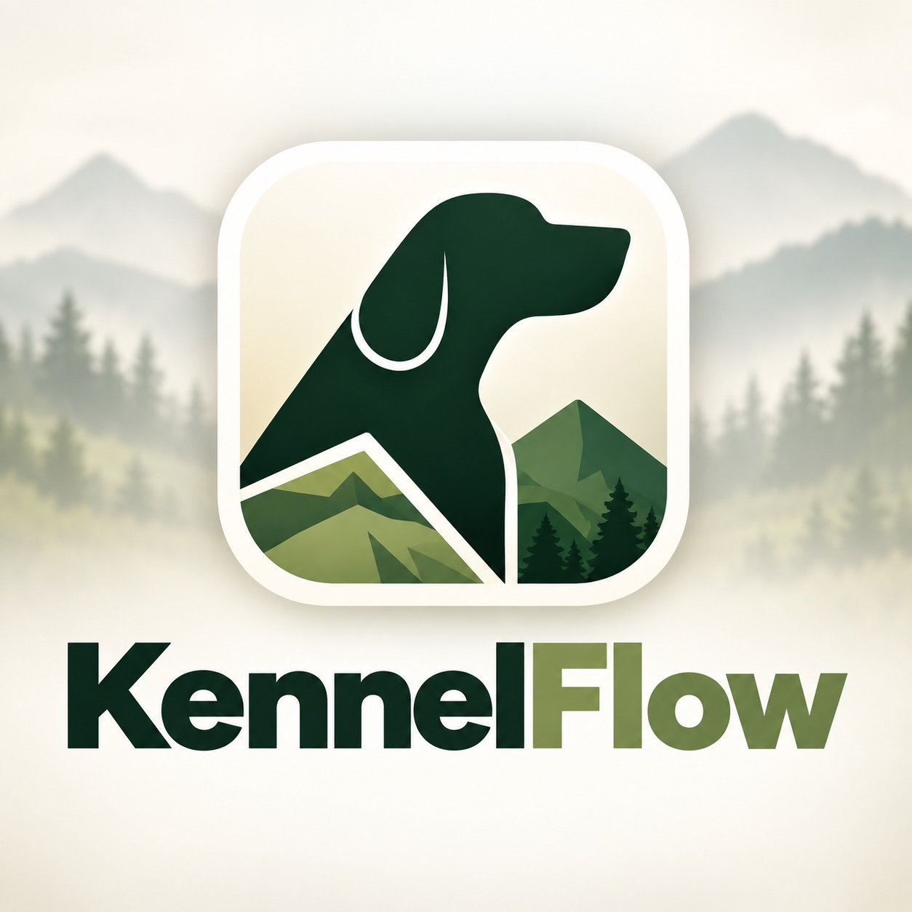

33 mm NFC Tag
KennelFlow NFC Tag
Writable NFC tag for kennel/run access inside KennelFlow.
$12.99
KennelFlow brings dog records, health, litters, boarding, duties, employees, NFC/QR smart kennel access, payments, contracts, pedigrees, reports, and analytics into one professional Apple-native system.

Replace paper logs, scattered notes, and disconnected apps with one organized workflow designed around dogs, kennels, people, and daily care.
Profiles, registrations, titles, health, genetics, photos, pedigrees, and imported documentation.
Use QR and NFC tags to open the right kennel, care list, duties, and records fast.
Morning, evening, and night checklists with history, accountability, and printable records.
Vaccinations, worming, X-rays, OFA/PennHip records, documents, and reminders.
Track balances, accept supported payments, manage contracts, and retain records.
Keep a clear view of spending, categories, kennel costs, and business trends.
Tap or scan a KennelFlow tag to reach the correct kennel record and daily care workflow. Build a faster, easier routine for employees and handlers without digging through menus.
Start with individual NFC tags, multi-packs, holders, or full facility kits.
Writable NFC tag for kennel/run access inside KennelFlow.
Tag and 3D-printed holder package for facility installation.
Ten NFC tags and holders for a complete kennel row setup.
KennelFlow is designed for individual breeders, professional kennel teams, boarding facilities, pet grooming businesses, shelters, veterinary teams, government agencies, and organizations managing multiple dogs and staff.